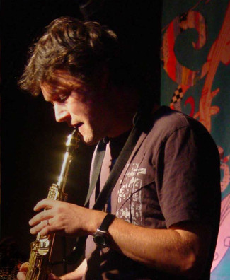
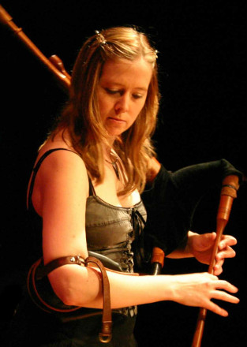
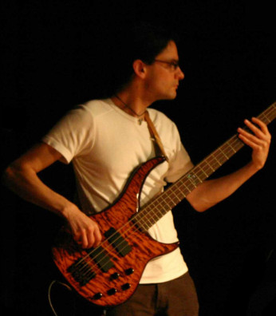
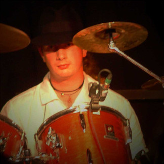

Who’s in Jabadaw?
Ex-members of Jabadaw...
Gone but not forgotten. Take a nostalgic look at some of them in our Hall of Fame.
Martin Keates
Hurdy-Gurdies, Keyboards
Martin
is one of the two founder members of Jabadaw. He started learning the
piano at the age of 15, detoured by way of the hammered dulcimer, and
eventually took up the hurdy-gurdy in 1992.
He was once described by Nigel Eaton as a teenage
hurdy-gurdy whizzkid
, even though he was well into his 20s at the time.
He also plays drums and melodeon (but doesn’t like to admit
it). Other interests include pinball, juggling and being obsessed with
(one of) the Spice Girls.
In his spare time he likes to appear in TV adverts with Bob
Mortimer.
Martin also played with Jabadaw Trio and in a duo with Miranda Rutter,
and currently plays in Laefty Lo and
with Helena in Skeller.
Simon Dew
Soprano Saxophone, Flute, Octave Mandola

Simon
is the other founder member of Jabadaw. His
first instrument was the tin whistle, which he took up at the age of
17. He soon branched out into other woodwind instruments, including the
flute, before discovering the soprano saxophone in 1994.
Simon also played with Fika, Jabadaw Trio and in a duo with Jo Veal.
Helena Reynolds
Fiddle, English Half-Long Border Bagpipes

Helena joined the band in September 2001 and played her first
gig with us in the spring of 2002. She plays a Quinton 5-string fiddle
and English half-long border bagpipes.
A product of the irrepressible Sheffield folk scene, Helena
has been playing folk music since the age of 18: she is particularly
interested in French, Breton and English music. She also developed a
love of Galician folk music when she lived in Santiago de Compostela.
She’s mad about all kinds of dancing: English Ceilidh, Morris, French,
Swedish, Galician... and anything else.
She also plays with Martin in Skeller.
Peter Kenney
Bass Guitar

Peter played his first public gig with us at the
Whittlesea Straw Bear Festival
in January 2003. His fretless bass adds more than a touch
of jazz to Jabadaw’s rhythm section.
When not turning out a well-crafted bassline, Peter is also a
fine pianist, flautist and composer and is involved in the Sheffield
folk and jazz scenes too.
Edwin Beasant
Drums, Percussion
 Edwin is the newest member of Jabadaw. He also plays with Pilgrim’s Way and The Ironmasters.
[Back to Home Page]